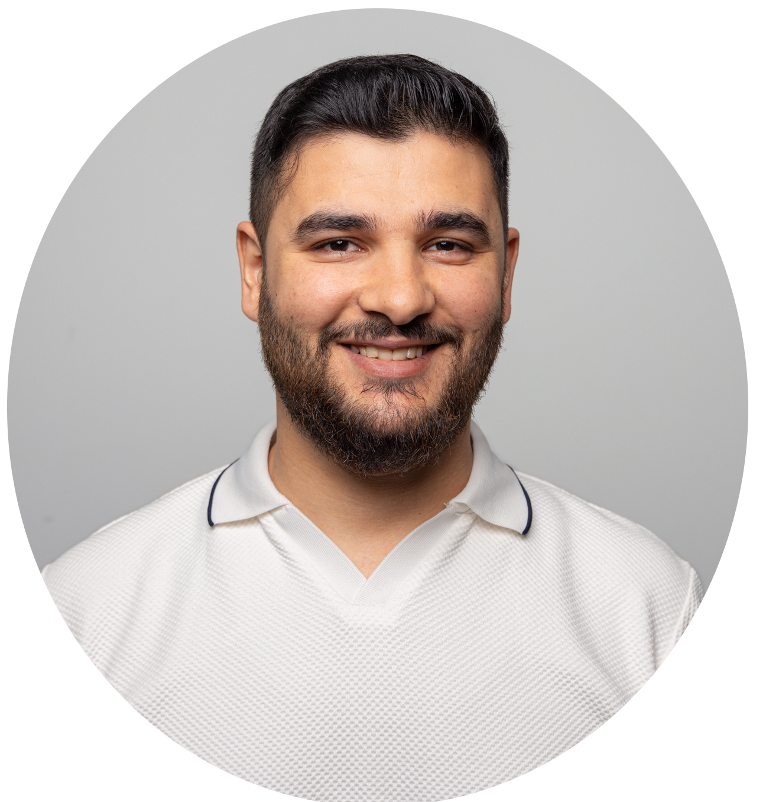
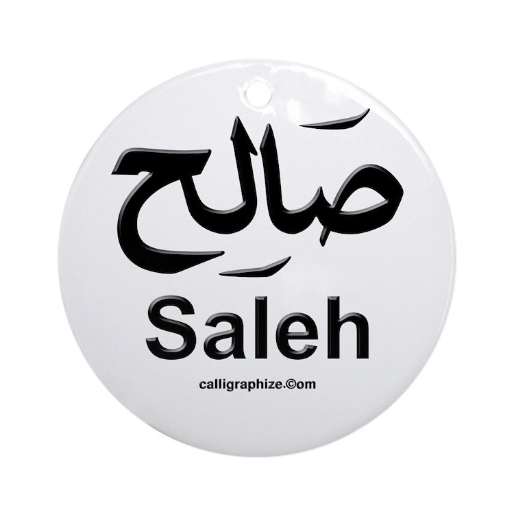
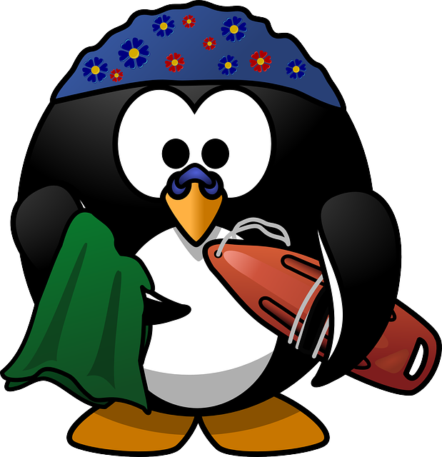

Fähigkeiten
Hobbys
Zukunft
contact
Wer bin ICH?
Ich bin Saleh, bin 25 Jahre alt und wohne mit meiner Familie in Zürich.
Ich habe schon in verschiedenen Länder gelebt und gearbeitet und sammelte dadurch diverse Erfahrungen
(Bau, Buchhaltung, Elektrizität, Handel und Dekoration).
Durch meine Berufserfahrung habe ich viele nützliche Eigenschaften erworben, darunter Disziplin, Geduld und eine schnelle Auffassungsgabe.
Der IT-Bereich interessiert mich sehr und deshalb will ich einen Job als Informatiker haben.
Was mache ICH ?
In diesen fünf Jahren habe vieles erlebt und gemacht, und zwar habe ich einen Deutschkurs besucht zwischen 2018 und 2019 an der Migro-klubschule besucht.
In 2019 habe ich an Trampolin-Basic einen Vorbereitungskurs, und dort würde ich auf die Ausbildung vorbereitet. Nachdem habe ich mich überall beworben, aber leider ohne Ergebnis.
Dann wüsste ich, dass ich einen Sek abschloss brauche, darum habe ich eine Sekundar-Schule für Erwachsene besucht.
Ich habe den Kurs mit sehr guten Noten abgeschlossen, und sofort habe ich mein Lebenslauf überall geschickt, aber wegen Alter und andere Grunde bin ich stehen geblieben.
Seitdem arbeite ich hart, um meine Fähigkeiten zu verbessern z. B. in Englisch, 10 Fingerschreiben und IT wissen.
Ich folge einen Onlinekurs für web Development auf Coursera und habe sogar paar Projekts geschafft.
Weiters Projekt
Was sind MEINE Hobbys?
Spoert ist sehr wichtig für mich, darum besuche ich das Fitnessstudio regelmässig und versuche gesundes zu essen.
Schwimmen liebe ich seit Kindheit, aber ich schwimme gern im Hallenbad und nicht im See oder Fluss.
Im Fluss Schwimme ich nicht aber spaziere gern dort, und manchmall sitze ich am Flussufer und lese etwas.



Was will ICH in Zukunft?
In der Zukunft will ich ein Expert in der IT werden und etwas selber erfunden.
Mein Job sollte ich sehr gern haben und der Arbeitsplatz und das Atmosphär sollte sehr bequem sein.
Ich will, dass sich mein Englisch immer und immer verbessert und ich noch weitere sprachen lernen kann.